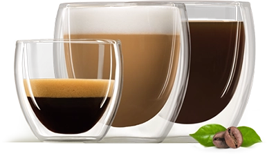
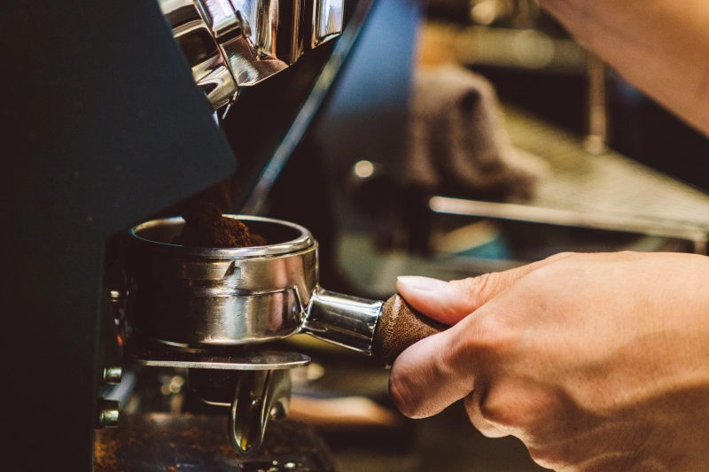
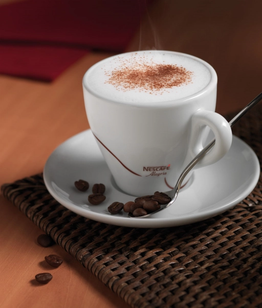

КОГДА ВПЕРВЫЕ ПОПРОБОВАЛИ КОФЕ?
Считается, что эфиопы открыли тонизирующие свойства кофе в 850 году н.э. Но о том, как правильно его использовать, чтобы наслаждаться вкусом, догадались не сразу:
- Первое время употребляли только ягоды.
- Чуть позже начали готовить напиток из сырой мякоти.
- И только в XII веке появился рецепт с кофейными зернами. Правда, сырыми.
- Прошло еще столетие, и процесс приготовления кофе стал напоминать современный: зерна предварительно сушили, обжаривали и измельчали, заливали водой, кипятили и настаивали.
Процесс мог занимать до нескольких часов. Хорошо, что сегодня автоматические кофемашины готовят напиток буквально за мгновение.
Убедиться в этом вы сможете с профессиональными кофемашинами Nestlé Professional®. Подберите оптимальную кофемашину для вашего офиса, кафе или другого бизнеса.
Кофе — настоящий источник энергии в вашей чашке. А еще это прекрасная возможность ненадолго отвлечься от рабочих проблем, чтобы вернуться к ним со свежими решениями. Мы подготовили интересные факты о любимом напитке, чтобы у вас с коллегами было больше тем для разговоров, не касающихся работы.
НЕОБЫЧНЫЕ ИСТОРИЧЕСКИЕ ФАКТЫ О КОФЕЙНЯХ
СРЕДНИЙ ВОЗРАСТ БАРИСТА В ИТАЛИИ
45 лет! Эта профессия считается очень уважаемой. Ведь для итальянцев приготовление кофе — настоящее искусство. Но даже не обладая специальными навыками, потрясающий кофе можно приготовить с помощью автоматической кофемашины. Так, профессиональное устройство заменит бариста в офисе.
КТО ПРИДУМАЛ РАСТВОРИМЫЙ КОФЕ?
Попытки ускорить процесс приготовления кофе предпринимались еще в XIX веке. Изначально изобретатели бились над этой задачей по заказу армии. Кофе в плитках предшествовал гранулированному. А знакомый нам растворимый напиток в гранулах появился в 1906 году. Изобретение принадлежит тезке первого президента США Джорджа Вашингтона — американскому изобретателю английского происхождения Джорджу Константу Вашингтону.
Nescafé® стала первой широко известной маркой растворимого кофе. Появившись в 1938 году, она помогла решить сразу 2 проблемы:
- Перед бразильским правительством больше не стоял вопрос, что делать с излишками кофе.
- А для приготовления напитка теперь не требовалось много времени и усилий.
В основе качественного сублимированного кофе — концентрат из натуральных свежемолотых и обжаренных кофейных зерен, который высушивают особым образом, получая аккуратные гранулы. В гранулах отлично сохраняются полезные вещества и вкус кофейных зерен.